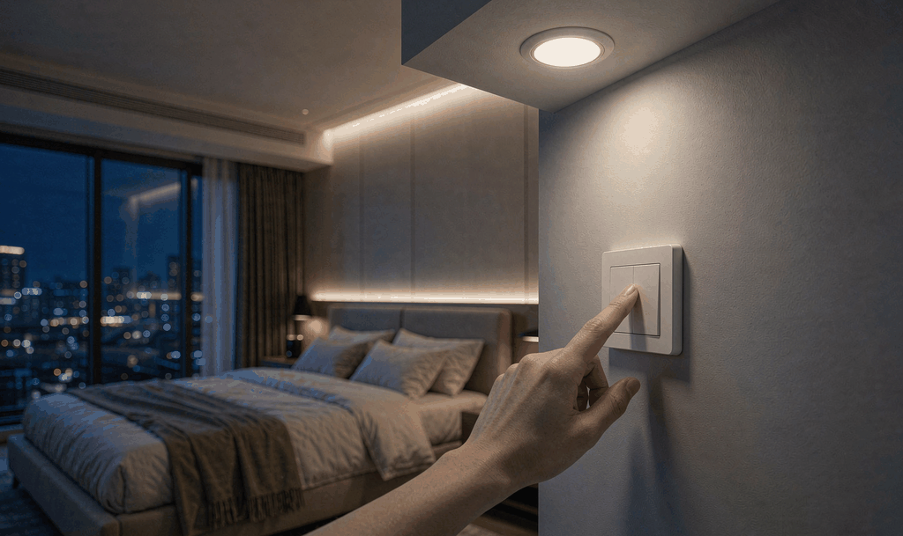
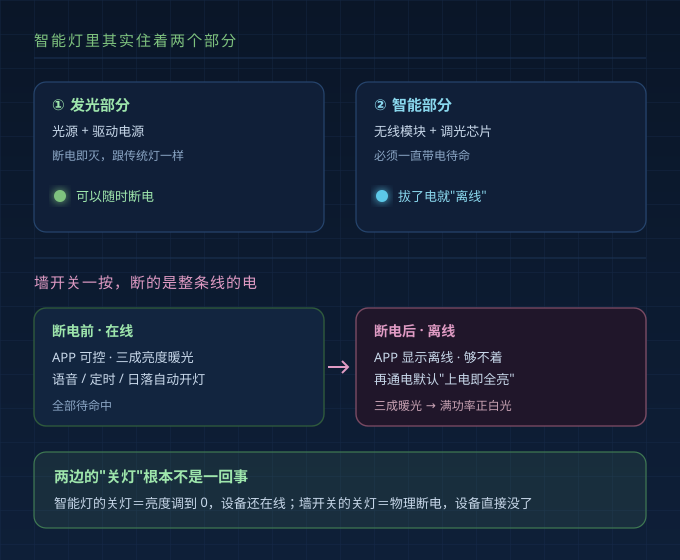
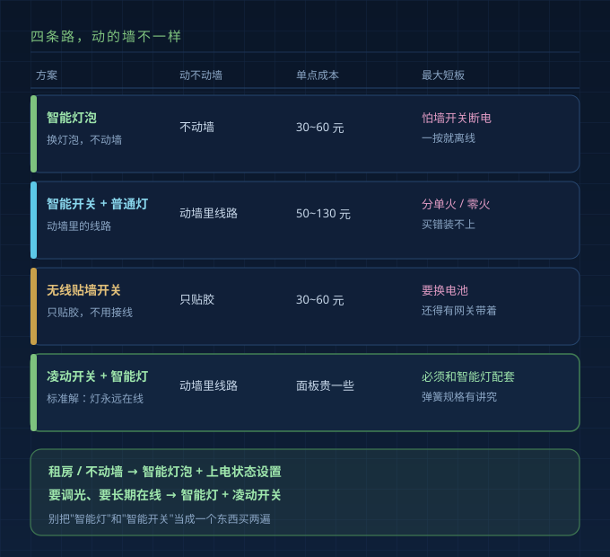
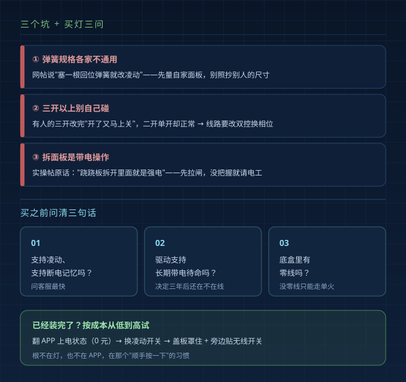

媳妇睡前懒得翻手机，走到门口顺手按了一下墙开关，灯灭了。
第二天早上打开 APP，那只灯显示"离线"。晚上她把墙开关再打开——灯"唰"地一下满功率正白光，前一天调好的三成亮度、暖光色温一概不认，半夜里把人闪醒。
这是 2026 年 10 月一个社区帖子的真实经历，装的是 38 块的智能灯泡，第三天就摊上这事。帖主还写了一句：猫从沙发上弹起来就窜了。
它不是灯坏了，也不是 APP 坏了——是智能灯和传统墙壁开关天生不对付。

一、墙开关为什么是智能灯的"天敌"
智能灯里住着"两个部分"：发光的部分（光源加驱动电源）和"智能的部分"（无线模块、调光芯片）。
传统灯泡关掉开关就彻底睡了，不耗电。智能灯不行——无线模块和调光芯片必须一直带电待命，才能在你开口那一秒立刻响应。
墙开关一按，断的不是"发光"那部分的电，是整条线的电，等于把联网模块也拔了。后果很直接：APP 显示离线；语音、定时、日落自动开灯全部作废；下次通电还得重新入网。
更麻烦的是通电那一瞬间。绝大多数灯出厂默认"上电即全亮"，不管你之前调的是不是三成暖光，一概不认，亮度拉满、色温拉到最白，半夜按一下就是这么被闪醒的。
"关灯"这两个字在两边根本不是一回事：智能灯的"关灯"是把亮度调到 0、设备还在线；墙开关的"关灯"是物理断电、设备直接没了。
二、最便宜的一招：先翻 APP 里的"上电状态"
动硬件之前，先花两分钟翻 APP。
智能灯的设置页里通常藏着一个选项，叫"上电状态""开机状态"或"断电记忆"，一般给三个值：恢复断电前状态 / 默认开 / 默认关。选成"恢复断电前状态"，墙开关再通电时灯就回到断电前的亮度和色温。成本是零。
涂鸦系、Aqara、Yeelight 这些主流方案基本都有类似设置，只是名字不一样、位置藏得深。买之前最省事的办法是问客服一句："这只灯支持断电记忆吗？"
但这一招只治"闪眼睛"，治不了"掉线"。
三、四种搭配，到底该怎么选
| 方案 | 动不动墙 | 大概单点成本 | 租房能不能用 | 最大短板 |
|---|---|---|---|---|
| 智能灯泡 | 不动墙 | 单个 30~60 元 | 能用，随手拧走 | 怕墙开关断电，一按就离线 |
| 智能开关（配普通灯） | 动墙里线路 | 单个 50~130 元 | 不能 | 分单火/零火，买错装不上 |
| 无线贴墙开关 | 只贴胶 | 30~60 元 | 能用 | 要换电池，还得有网关带着 |
| 凌动开关（配智能灯） | 动墙里线路 | 比普通面板贵一些 | 不能 | 得和智能灯配套，弹簧规格有讲究 |
| 智能灯 + 智能开关 | 动墙里线路 | 两样都要买 | 不能 | 功能重叠，钱花了两遍 |
那位帖主最后把七个灯位全换成智能灯泡，两百多块，图的是不动墙、随手拧走。代价也清楚：只要还有人习惯按墙开关，就还悬着。

四、凌动开关到底是什么
理解它只要一句话：按下去会自己弹回来，物理上并不真正切断电源。
它做的事，是给智能灯发一个"断电—恢复"的脉冲信号，灯识别到状态翻转，就执行开或关。所以你手摸的还是墙上那个开关，手感还在，但智能灯一直在线。
这里有个关键区分，很多人买的时候就混了：
- 凌动开关 = 不切断电路，只发信号，解决"智能灯关灯离线"；
- 智能开关 = 用继电器真正切断电路，解决另一件事：开关本身上线，能进 APP、能报状态、能联动。
两个问题别混着买，也别指望一个解决另一个。
五、三个坑，先看清楚再动手
| 坑 | 表现 | 怎么绕 |
|---|---|---|
| 弹簧规格各家不通用 | 网上流传"普通墙壁开关塞一根回位弹簧改凌动""不用改线，保留手动开关，还不影响智能控制"；可改装帖里出现过很不常规的弹簧尺寸，买错就装不上 | 动手前先量自家面板尺寸，确认能不能匹配，别照抄帖子 |
| 三开以上别自己碰 | 有人的三开面板改完出现"我开了它马上又关掉"，二开、单开却都正常 | 店家给的结论是线路要走双控换相位，一根弹簧救不回来，这种直接找电工 |
| 改装是带电操作 | 有实操帖写得很直白："第二个跷跷板拆开里面就是强电，一定要拉闸了再改" | 拆面板前必须拉闸，没把握就请电工；改装对质保的影响各家口径不一，下单前问清、留凭证 |

六、做灯的人给你的"买灯三问"
我们是做驱动电源的，从灯这一头看，有三句话值得买之前问清。
第一问：这只灯支持凌动、支持断电记忆吗？ 问客服最快，或看 APP 里有没有"上电状态"；没有的，别指望它断电后能回到原样。
第二问：它的驱动电源支持长期带电待命吗？ 智能灯本质上是台常年通电的电器，驱动的待机设计和用料，比"能不能亮"重要得多，基本决定它三年后还在不在线。
第三问：我家开关底盒里有零线吗？ 这决定以后能不能上零火版智能开关。新房自装优先零火版；老房和多数精装房的开关盒里只有火线，只能走单火，而单火带小功率 LED 容易"鬼火"——关灯后微亮、闪烁。装之前先打开底盒看一眼。
七、已经装完、正在犯愁的人
按成本从低到高试三步：
- 翻 APP 的上电状态，选"恢复断电前状态"，先把"闪醒人"这条解决掉，零成本；
- 换凌动开关，就是一个开关的事，让智能灯永远带电；
- 墙开关上加个盖板罩住，旁边贴一个无线开关，让家里人摸到的是新开关。
第三步看着土，其实最管用——根不在灯，也不在 APP，而在家里那个"顺手按一下"的习惯。
智能灯配智能开关能用吗？
能用，但先想清楚要解决什么。智能开关是真正断电的，配智能灯，一按灯照样离线；真要用，一般得让它"短接常通"只当个面板。要解决灯掉线，还是凌动更对口。
凌动开关会不会让灯永远不灭？
不会。它发的是状态翻转信号，灯的电气回路始终通着，但按一下它关、再按一下它开，跟普通开关一样，不影响灭灯。
换凌动开关要重新布线吗？
多数情况不用，接的还是原来那两根线，只是开关本身换掉。前提是面板规格、弹簧能对上，而且一定要断电操作。三开以上往往要改双控换相位，别上手。